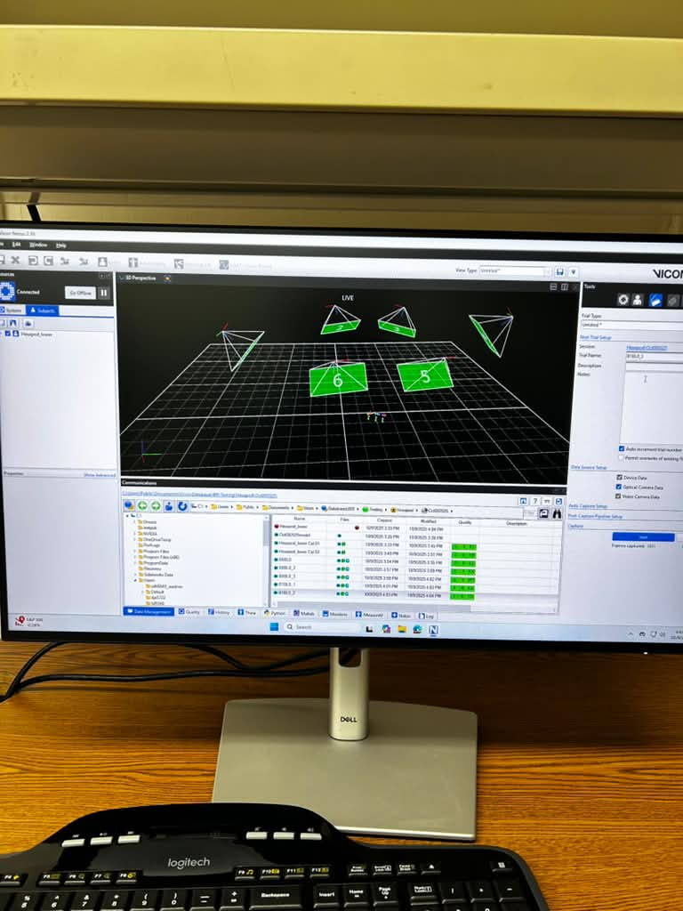
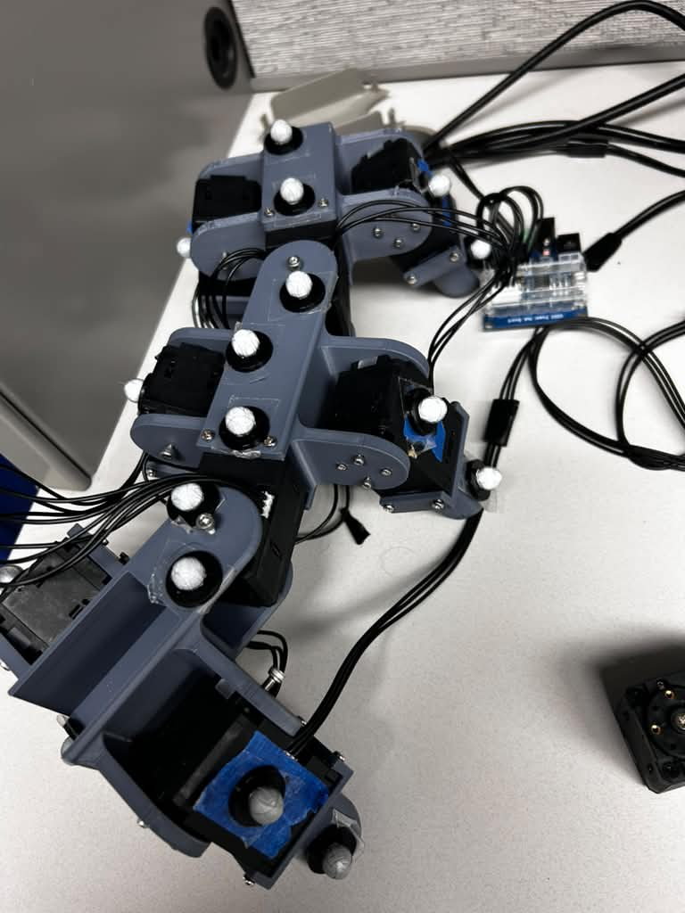
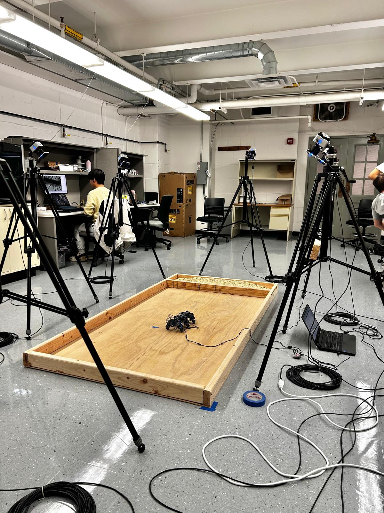

01
Lab research
Hexapod
Investigating how changes in leg timing and ground-contact duration affect the walking efficiency of a six-legged robot.
Learn more
overview
Locomotion in Biology and Robotics(LIBR) Lab · Penn State
Alternating tripod gaits coordinate two groups of three legs. By comparing different phase shifts and duty cycles, this work examines how the timing of leg movements influences locomotion efficiency.
My contributions
- Working on a six-legged hexapod robot to study locomotion efficiency by comparing alternating tripod gait patterns.
- Assisting in constructing and modifying the hexapod, including designing mechanical adjustments.
- Collecting and analyzing experimental data using MATLAB and Vicon Nexus across different phase shifts and duty cycles.
- Evaluating Time-of-Flight sensors for distance measurement and integration with a Raspberry Pi.
Photos & video


